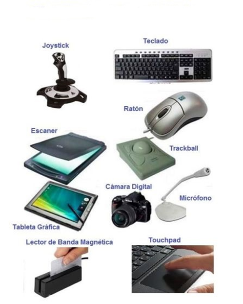
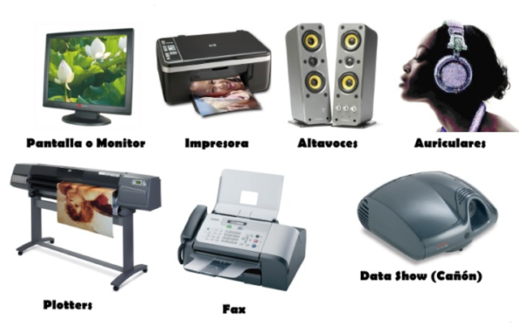
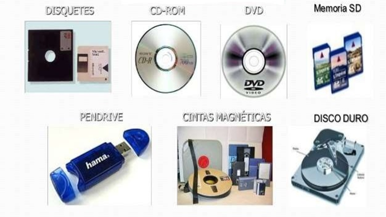
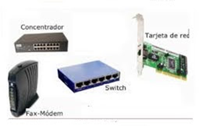

En informática, se denomina periféricos a los aparatos y/o dispositivos auxiliares e independientes conectados a la unidad central de procesamiento de una computadora.
Se consideran periféricos tanto a las unidades o dispositivos a través de los cuales la computadora se comunica con el mundo exterior, como a los sistemas que almacenan o archivan la información, sirviendo de memoria auxiliar de la memoria principal.
Los periféricos pueden clasificarse en
Periféricos de entrada: Los periféricos de entrada permiten al usuario introducir información en el ordenador.

Periféricos de salida: son dispositivos que muestran o proyectan información hacia el exterior del ordenador. La mayoría son para informar, alertar, comunicar, proyectar o dar al usuario cierta información, de la misma forma se encargan de convertir los impulsos eléctricos en información legible para el usuario. Sin embargo, no todos de este tipo de periféricos es información para el usuario.

Periféricos de entrada/salida (E/S): sirven básicamente para la comunicación de la computadora con el medio externo.
Periféricos de almacenamiento: son los dispositivos que almacenan datos e información por bastante tiempo. La memoria de acceso aleatorio no puede ser considerada un periférico de almacenamiento, ya que su memoria es volátil y temporal.

Periféricos de comunicación: son los periféricos que se encargan de comunicarse con otras máquinas o computadoras, ya sea para trabajar en conjunto, o para enviar y recibir

El estudiante en este espacio puede apoyarse del documento y el video para realizar la actividad 2.